Written by Craig Allsop - 2026
This document described how to use Visual Studio Code as a debugger with VCC (Virtual Color Computer) to develop and debug DECB programs.
Written by Craig Allsop · Updated 2026-11-27 · Back to top
| Tool | Version | Notes |
|---|---|---|
| VCC | 2.1.10+ | Windows — GitHub releases |
| Visual Studio Code | 1.147.0+ | Editor — code.visualstudio.com |
| VCC Debug Extension Package (.vsix) | 1.0.0.0+ | Extension for Visual Studio Code — GitHub vcc-debug |
| Lwtools | 4.25+ | Lwtools Webpage See 4.25 link has win64 Windows binaries. |
To prepare for debugging with Visual Studio Code, follow these steps, or skip a step if already done.
This is generally the quickest and easiest option.
This is useful if you have multiple versions, or don't want to use the installer.
C:\programs\vcc-2.1.10\.With the downloaded win64 zip, extract the files into a suitable location on your machine.
Such as C:\programs\lwtools-2.25-win64\
Download and install Visual Studio Code from code.visualstudio.com. There is a download link in the top right.
This step is only required once, or when there is a new version of the .vsix package. This will add support to Visual Studio Code for attaching to VCC in a debugging session.
With Visual Studio Code running:
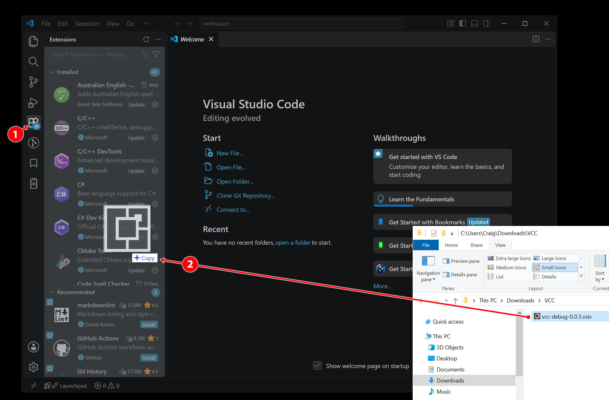
To open a project with Visual Studio Code, either launch it and choose 'Open Folder...' to pick the directory containing your project.
OR from a shell, run Visual Studio Code from the directory containing your project (e.g. workspace):
> cd workspace
> code .
In order to configure Visual Studio Code for attaching to VCC, a launch.json is required. This contains the instructions relevant to your project. The file is stored in your workspace at .vscode/launch.json.
To create it:
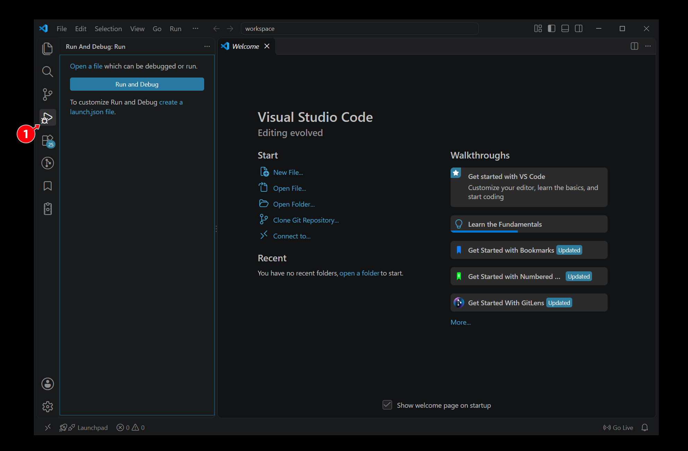
Customize the launch.json for your project:
${WorkspaceFolderBasename} to the binary of your top-level assembly file. Also change the listing(s) to your .lst file produced by lwasm.$2000 for our sample.For more complex projects and detailed information about these options, please refer to the Usage Guide.
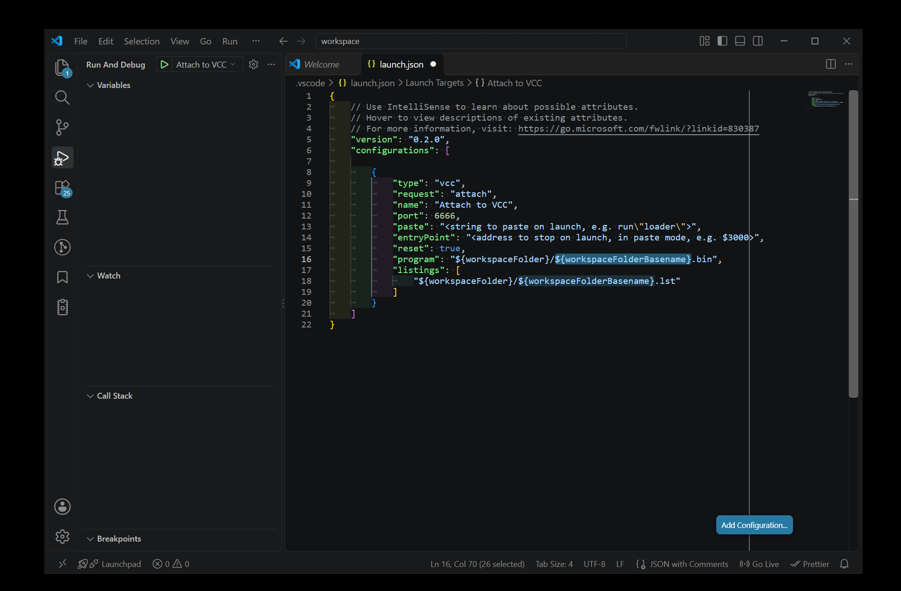
For a simple example, follow along with the Example.
Written by Craig Allsop · Updated 2026-11-27 · Back to top
| Key | Value |
|---|---|
| type | Which debugger extension to use, which is vcc for our purposes. |
| request | The kind of launch request. attach means it will attempt to attach to a running VCC process. Other debuggers support launch, but this one does not. |
| name | It's just the label shown in the Run & Debug dropdown; can be anything you like. |
| port | The socket port to attach to, which for VCC is 6666. |
| paste | Optional. A string to 'type' (paste) into VCC prior to debugging to start. Some projects may launch their program via a basic loader, so you can specify run\"loader\"\n or similar. Double quotes must be escaped with a backslash. The ENTER key is represented by \n. |
| entryPoint | Optional. The debugger will stop on entry at this address. Specify it in hexadecimal, starting with a $ sign, e.g. $2000. When used with paste, this option will automatically run VCC at its fastest speed until it reaches the entry point address. |
| reset | Optional. Reset VCC on attach. If paste has a value, it will be pasted after 30 frames to allow time for DOS/ECB to initialize. VCC will be reset when Visual Studio Code disconnects from the debugging session, ready for the next one. |
| program | Optional. If specified, the binary will be loaded directly into memory. Version 2.1.10 supports only DECB binaries. |
| listings | Required in version 2.1.10. Should point to a listing file produced by lwasm for your binary. This corresponds to the --list=x option. |
| preLaunchTask | Optional. Specifies a task label from tasks.json to run before the debugging session starts. This is useful for compiling the project in preparation for debugging before you press F5 to start. |
These are the standard Visual Studio debugging keys.
| Shortcut | Action |
|---|---|
F5 |
Start debugging / Continue (resume after pause) |
Shift+F5 |
Stop debugging |
F9 |
Toggle breakpoint on current line |
F10 |
Step over (next line, don't enter functions) |
F11 |
Step into (enter the function call) |
Shift+F11 |
Step out (finish current function, return to caller) |
Ctrl+Shift+Y |
Open Debug Console |
Ctrl+Shift+D |
Open Run and Debug sidebar |
Written by Craig Allsop · Updated 2026-11-27 · Back to top
The following is a short example of debugging assembly with Visual Studio Code and VCC. It assumes you've already followed the steps in Installation to set up your environment.
Open Visual Studio Code and the 'workspace' folder.
Create a top-level assembly file.
Now we're ready to begin coding.
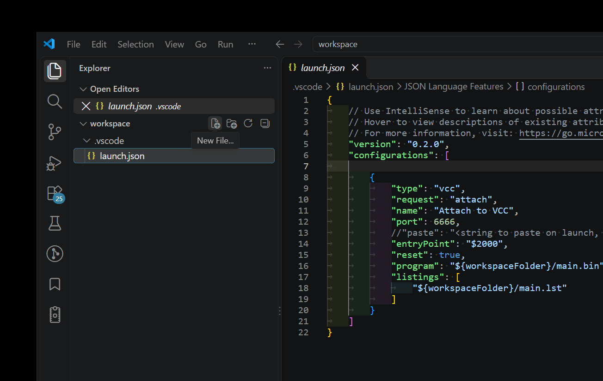
Write your own code if you wish but otherwise here is a small program to try. Just copy and paste it into your main.asm file.
It loads at $2000, takes a color (text character) and calls 'paint' function 4 times for the 4 entries in a table that define how. Increments the color and loops.
org $2000
start lda >color ; start with a color
repeat ldy #table ; make y out table pointer
bsr paint ; paint a line x 4
bsr paint
bsr paint
bsr paint
lda >color ; get the color
adda #$10 ; increment to next color
ora #$80 ; ensure its upper chars
sta >color ; store color
sync ; wait for frame sync x 4
sync
sync
sync
jmp repeat ; loop back to continue
screen equ $400 ; the screen address
color fcb 143 ; a starting color
table fdb screen+2 ; start address
fcb 14 ; how many to paint (right)
fcb 2 ; direction to paint
fdb screen+30+32-2 ; top right corner down a line
fcb 14 ; how many to paint
fcb 32 ; direction to paint (down)
fdb screen+32*16-4 ; bottom corner
fcb 14 ; how many to paint
fcb -2 ; direction (left)
fdb screen+32*14+2 ; bottom left corner
fcb 14 ; how many to paint
fcb -32 ; direction (up)
****************************************************
* paint - draws colors starting with color in 'a'
* Entry:
* a - starting color
* y - table pointer: address, count, offset
****************************************************
paint ldx ,y++ ; x = address
ldb ,y+ ; b = count
pshs b ; push to stack
ldb ,y+ ; b = offset
loop sta ,x ; write a at address
sta 1,x ; write a at address+1
adda #$10 ; increment the color
ora #$80 ; keep in upper chars
leax b,x ; update address pointer
dec ,s ; decrement count
bne loop ; loop if not done
puls b,pc ; return (pull count, pc)
end start ; finish with exec address
Refer to the 6809 Assembly Instruction Reference for description of the individual instructions.
To build our project, we can use the 'make' utility.
Click on 'New File' from the Explorer panel.
Type in 'Makefile' for the filename. (A capital letter is the standard.)
Press ENTER and you can cut and paste the following:
LWASM = C:/programs/lwtools-4.25-win64/lwasm.exe
OPTS = --6809 --format=decb
main.bin: main.asm
$(LWASM) --output=$@ --list=$(basename $@).lst $(OPTS) $<
clean:
del main.bin main.lst
This is pretty straightforward. The first two lines just define some values we'll use on the lines below them. My lwtools is at c:\programs\lwtools-4.25-win64\ so replace this path with yours.
The next section tells make to build main.bin whenever its dependent, i.e. main.asm (there could be multiple), is changed, by running the shell commands (indented) under this rule. A variable such as LWASM will be expanded to the value we previously set. The $@ represents the target (main.bin) and $< represents the first dependent.
The next section tells make that when we run make clean, it should run these shell commands (indented). In this case, it just removes the two files created by the previous section.
That's it, simple.
Note: Indentation is important in a Makefile; the shell commands are indented by one tab.
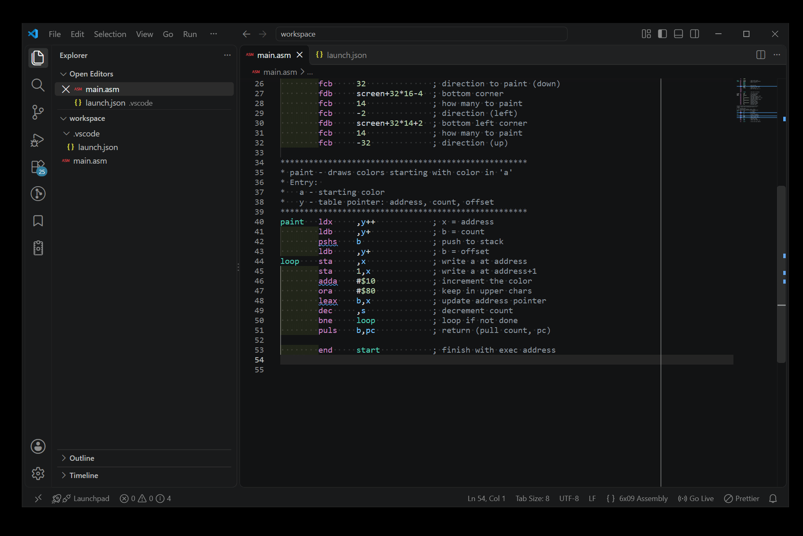
Now that we have our Makefile, we can manually run it to build the project.
make. It may fail if you don't have make installed.winget install ezwinports.make.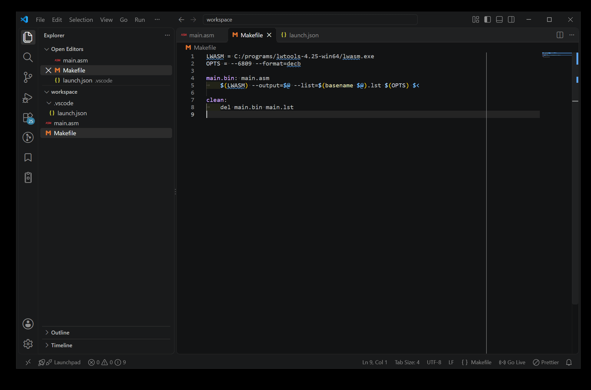
After restarting Visual Studio Code:
make to build our project.main.bin and main.lst.These are the filenames we added to launch.json in the Installation steps 6 & 7.
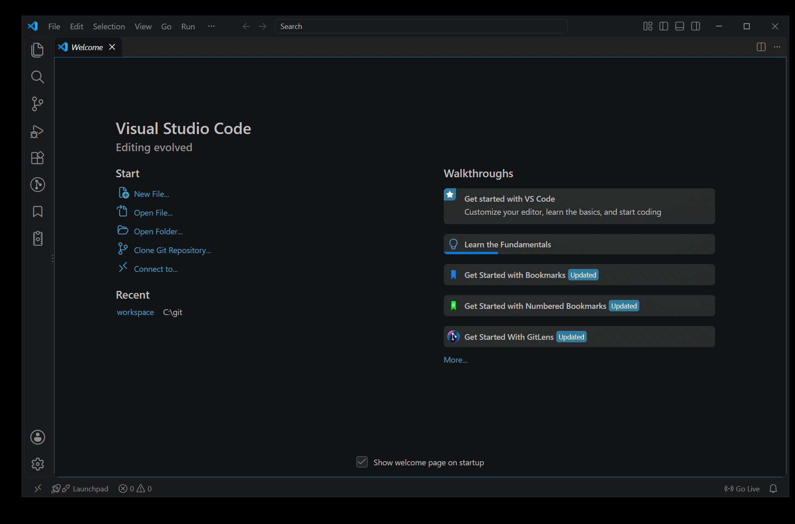
Launch VCC and enable the debug server:
A tick will appear next to it when it's enabled.
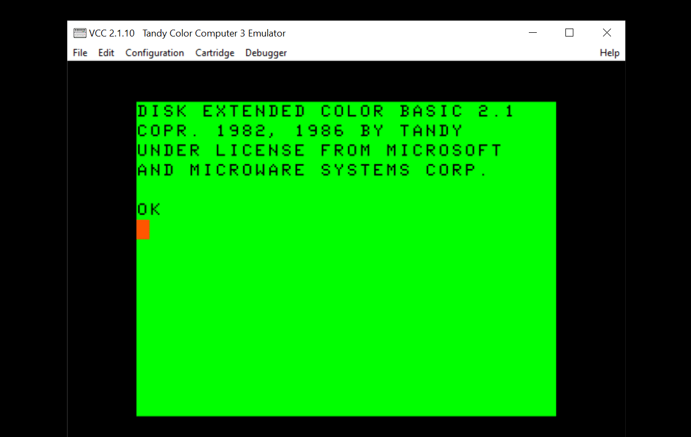
Now we're ready to begin debugging. Press F5 to launch the program in VCC; Visual Studio Code will switch to the debugging tab and stop with the cursor on the first instruction at $2000, as seen below.
The following are the various components of the debugging session:
To continue executing the program, press F5.
To stop, just select a line and press F9 to add a breakpoint.
To end debugging, use Shift+F5.
See keyboard shortcuts for more shortcuts.
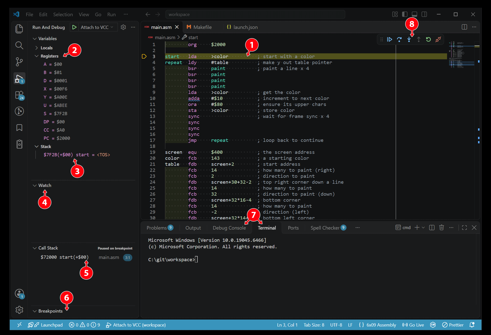
As it stands, we have to type make in the Terminal window when we make changes to the source. It's tedious, so let's automate it. We'll need a tasks.json for this.
Ctrl-Shift-P for the Command Palette (a list of commands) and type tasks to filter this list for all task-related commands, and find the one called Tasks: Configure Task and select it.Create tasks.json from template and select it.Others: Example to run an arbitrary external command. This will give us a simple echo test task.Build.make and save the file.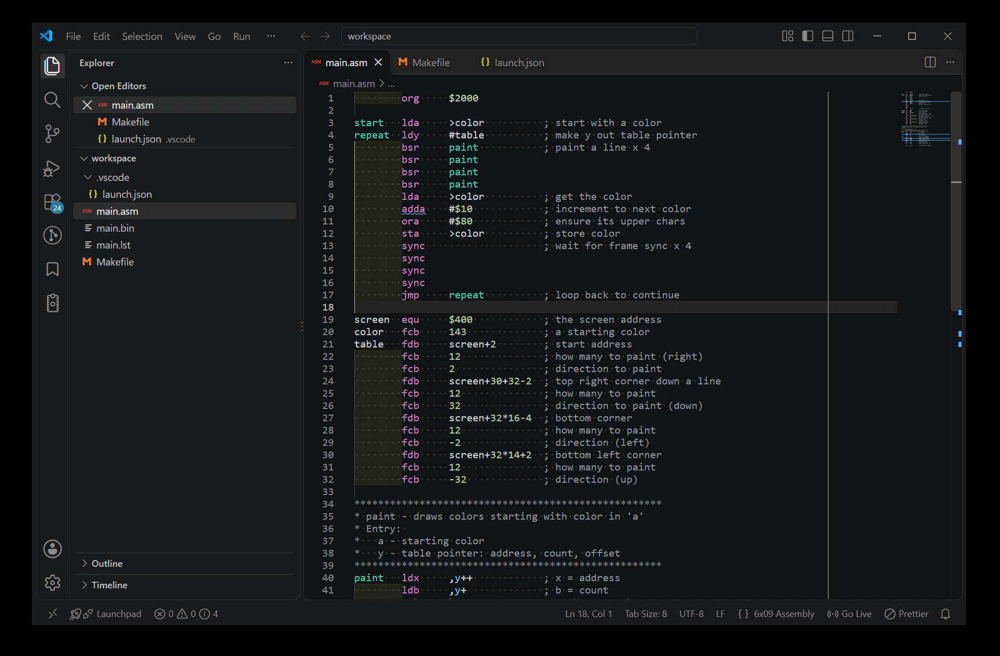
Now we need to update the launch.json to tell Visual Studio Code what task to run when F5 is pressed.
launch.json from the .vscode directory.], and on the next line type a double quote " and then preLaunchTask. You can press TAB to complete the word and a menu will appear.main.asm.make in the terminal and will stop at the start of the program; you can press F5 to run it.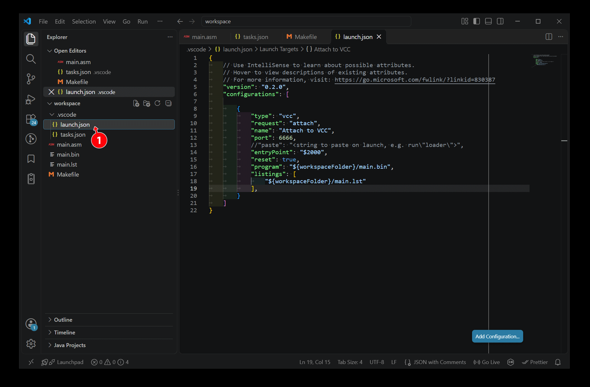
Now, any changes made will be automatically built before debugging. Good luck!
Written by Craig Allsop · Updated 2026-11-27 · Back to top
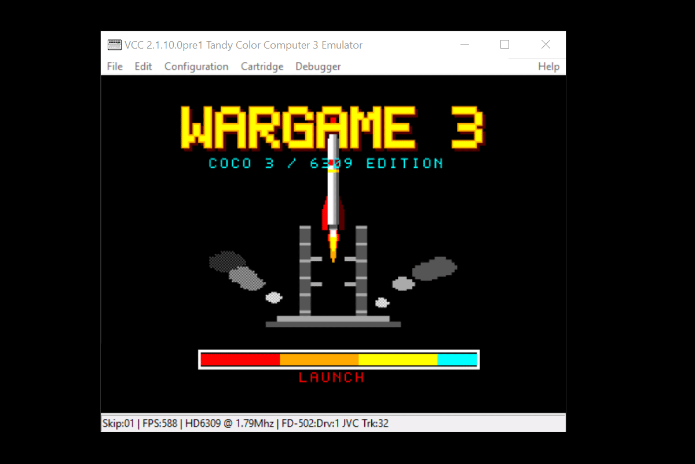
In this project, there is just one .asm file, so building is similar to that of the Example. However, there is a lot of data which goes with the game: 3 DSKs. These can be mounted in floppy disks 1, 2, and 3 in VCC, and the game has a config program to allow this scenario.
For debugging this game, the launch.json shall use the 'paste' option to start the game by typing run"wg" into DOS. The entry point is $3000.
.vscode/launch.json:
{
// Use IntelliSense to learn about possible attributes.
// Hover to view descriptions of existing attributes.
// For more information, visit: https://go.microsoft.com/fwlink/?linkid=830387
"version": "0.2.0",
"configurations": [
{
"type": "vcc",
"request": "attach",
"name": "Attach to VCC",
"port": 6666,
"preLaunchTask": "build",
"reset": true,
"paste": "run\"wg\n",
"entryPoint": "$3000",
"listings": [
"${workspaceFolder}/WARGAME3.lst"
]
}
]
}
For the pre-launch build task, this will be called before debugging starts to ensure it's up to date.
.vscode/tasks.json:
{
"version": "2.0.0",
"tasks": [
{
"label": "build",
"type": "shell",
"command": "b.bat",
"problemMatcher": "$lwasm",
"group": {
"kind": "build",
"isDefault": true
}
}
]
}
The b.bat is just a batch file containing the shell commands to call lwasm and produce WARGAME3.bin and WARGAME3.lst, then copy it onto DSK 2 where the game is stored.
b.bat:
c:\Programs\lwtools-4.25-win64\lwasm.exe --6309 --list=WARGAME3.LST --output=WARGAME3.BIN --format=decb WARGAME3.ASM
c:\Programs\toolshed-2.6.0\decb.exe copy -2 -b WARGAME3.BIN -r WARGAME2.DSK,WARGAME3.BIN
Here we can see it stopped at a breakpoint in a function called _putc (draws a character). The Call Stack shows the callers of _putc.
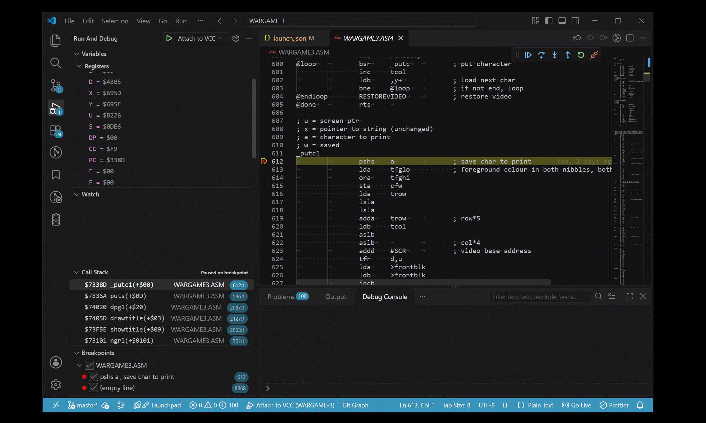
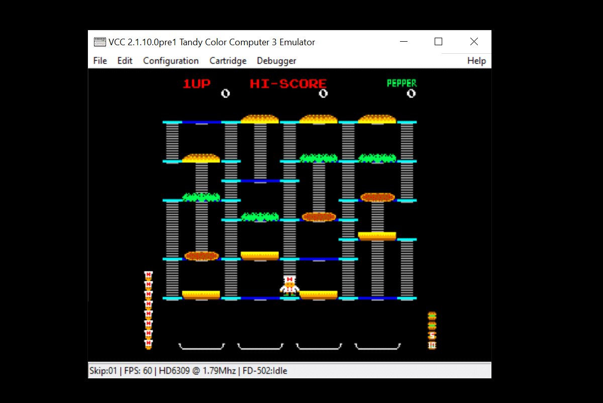
In this project, there are many assembly files. A top-level assembly file includes the sources, so it's a single compile command.
This project uses M4, the macro preprocessor, for macros, and all the assembly files are run through the processor. This results in line numbers being different in the final LWASM listing file; however, M4 can emit source line information with -s. The debugger will use these alternative source line mappings if they are present. This allows breakpoints to be set in the original files.
The assets for this project also generate assembly files, a file for each sprite (a compiled sprite). These also get included by the top-level file, but have no source (the source is the image.png file). Thus, we see below (see 3) that stopping on one of them will show the generated file instead.
For this launch.json, it executes the binary directly as everything for the game is contained within it, including its assets. It modifies the MMU as it loads. I haven't specified the entry point since I didn't want it to stop after loading.
The launch.json:
{
// Use IntelliSense to learn about possible attributes.
// Hover to view descriptions of existing attributes.
// For more information, visit: https://go.microsoft.com/fwlink/?linkid=830387
"version": "0.2.0",
"configurations": [
{
"type": "vcc",
"request": "attach",
"name": "Attach to VCC",
"port": 6666,
"reset": true,
"program": "${workspaceFolder}/gen/bt.bin",
"reset": true,
"listings": [
"${workspaceFolder}/bt.lst"
]
}
]
}
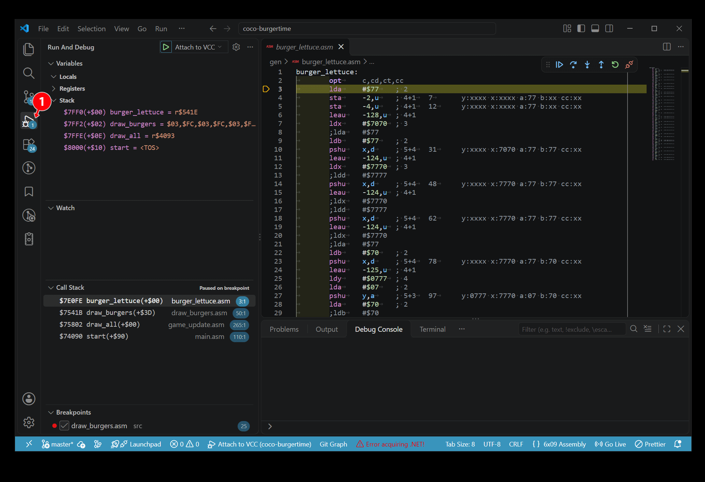
Written by Craig Allsop · Updated 2026-11-27 · Back to top